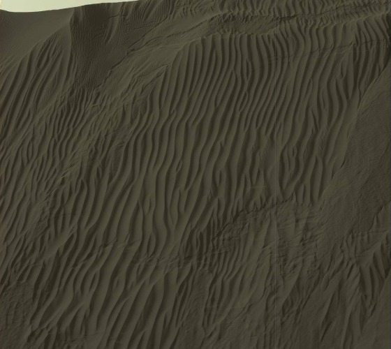
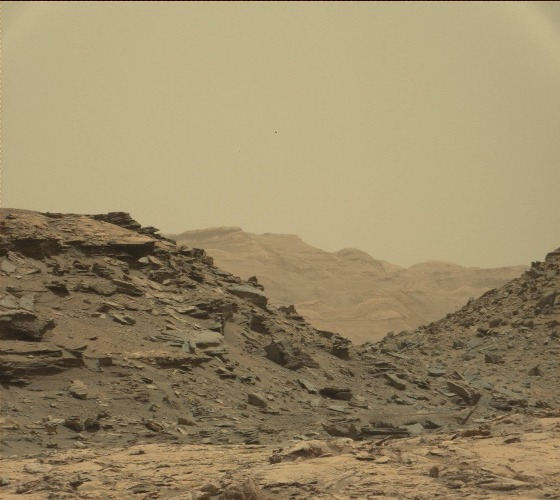
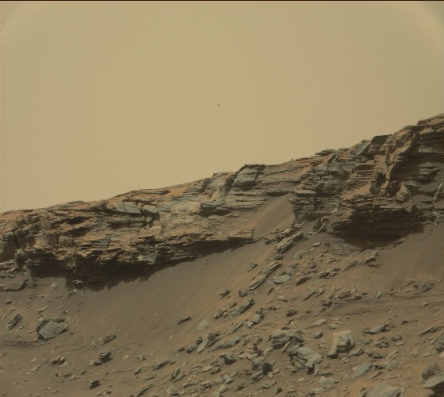
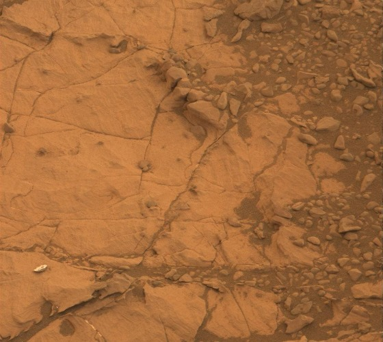

mars32k Dataset
This dataset consists of about 32,000 color images collected by the Curiosity rover on Mars between August 2012 and November 2018. The images show various geographical and geological features of Mars such as mountains and valleys, craters, dunes and rocky terrain. All images have been scaled down using linear interpolation to 560x500px (some images have been cropped). The dataset is intended for unsupervised learning and the images are only labeled with the date they were taken on. This dataset only contains photos taken with Curiosity's Mastcam camera and all grayscale or other images were removed.
| Total images | 32,368 |
|---|---|
| Total size | 3.4GB |
| Image resolution | 560x500px |
| Average size | 105kb |
Format
The dataset is available as a zip file. The archive contains all 32,368 images as.jpg files. The filenames are structured like this:[cr_]sol_nasa_filename.jpgcr_ prefix indicates that this photo was cropped to the same ratio as all other images. sol is the martian solar day that the picture was taken and nasa_filename is the original filename from NASA.Image
725_0725MR0030950120402857E01_DXXX.jpg for example was not cropped, taken 725 days after landing and has the filename 0725MR0030950120402857E01_DXXX.Preview





Anomalous Images
The dataset is not curated and some images contain rover parts obscuring the image, black bars or are images of the sky.Download
Note: All images are courtesy of NASA/JPL-Caltech. You can read the full use policy here.
Any questions? Suggestions? Clarification needed?
Telegram: @schmidtdominik
Email: schmidtdominik30 [at] gmail. [dot] com
Reddit: u/dominik_schmidt
Telegram: @schmidtdominik
Email: schmidtdominik30 [at] gmail. [dot] com
Reddit: u/dominik_schmidt